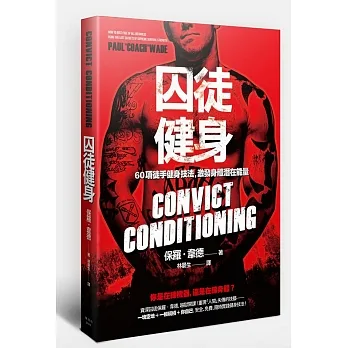

囚徒健身 60項徒手健身技法，激發身體潛在能量
作者： 保羅‧韋德
新功能介紹
譯者： 林晏生
出版社：楓書坊
新功能介紹
出版日期：2015/02/14
語言：繁體中文
定價：350元
優惠價：7折244元
優惠期限：2024年04月09日止
內容簡介
翻開本書，你將發現自己就是教練、身體就是器材、 整個城市，都是你的健身房！ 資深囚徒保羅‧韋德，越獄開課！ 重現「人間」失傳的技藝— 想要身強體壯，你根本不需要啞鈴槓片、彈力拉繩等酷炫的器材， 或其他健身產業、置入性行銷廣告試圖透過洗腦讓你相信非用不可的廢物…… 你需要的是正確的方法—訓練之道。 —保羅‧韋德
本書特色
◎PTT Busclebeach版盛讚，號稱健身界「魔教秘笈」。
◎伏地挺身、深蹲、引體向上、抬腿、下腰、倒立伏地挺身—六招十式，漸進訓練。
◎一塊空地、一根橫槓＋你自己，安全、免費、隨時實踐健身技法！
◎重現被健身房、康健雜誌排除，人間失傳的「徒手健身體操」。
◎致力於提倡安全訓練技巧的重要性。
這是個健身房林立的城市—幾乎走到哪，都看得到生氣勃勃的筋肉魔人，他們擁有40公分以上的粗壯手臂、荊棘般的青筋，無袖背心或T恤套在身上，就像服貼的透明保鮮膜，一出手就能推動沉重的槓鈴，磚塊般的腹肌、馬甲線隨便都能夾死一堆蒼蠅，然而……這就稱得上是「健壯」嗎？
這些讓男人嫉妒，女人尖叫的猛男中，有多少人具備實用的運動肌力？能臥倒做出單手伏地挺身？後仰觸地？只靠膝蓋和臀部的力量，單腿深蹲起立？利用單槓做出完美無瑕的單手引體向上？—除了操弄健身房裡花稍、平穩的器材，他們還有多少力氣能夠運用在現實生活中？
撒了大把金錢和時間上健身房，「到底是在練機器，還是在練身體？」
或許機械能練出粗壯的四肢，卻無法強化肌腱和關節。不信？親自到熱門的健身中心走走，你會看到很多人關節著裝護具，背纏高科技護套，手肘環繞固定束帶，更衣室裡更是鎮痛擦劑味撲鼻—你問「那該怎麼辦？」關鍵是—憑藉「自己」喚醒身體潛藏的力量，全面性地強化肌肉與關節。
本書作者曾經是名囚犯，在資源匱乏的情景下，以「漸進式徒手體操」練就一身足以在險惡監獄存活的實用本領，只要「運用自身的體重＋漸進式訓練」，無論單手伏地挺身、單腿深蹲、單手引體向上、吊掛抬腿、鐵板橋，甚至是單手倒立伏地挺身都只是雕蟲小技。
翻開本書，你會發現健康雜誌和健身房裡告訴你的「需要」多麼虛妄，因為只要「你自己＋一小塊空間」，頂多再加一根能夠懸掛的橫槓，就能開發極致的生存力量！
拋下啞鈴與槓片，退掉健身房會員證，你將發現真正的強大！
名人推薦
 保羅‧韋德在《囚徒健身》一書中介紹幾個關鍵的自體重量訓練方式，打造合理又能有效讓狗熊變英雄的進程，並提出一套完整的訓練原理。這本書買就對了。──帕維爾‧梭特索林（Pavel
保羅‧韋德在《囚徒健身》一書中介紹幾個關鍵的自體重量訓練方式，打造合理又能有效讓狗熊變英雄的進程，並提出一套完整的訓練原理。這本書買就對了。──帕維爾‧梭特索林（Pavel
Tsatsouline），前蘇聯特種部隊體能訓練教官，著有《赤手鬥士》（The Naked Warrior）。
《囚徒健身》一書向自體重量訓練致敬，雖是新瓶裝舊酒，但合我胃口。本書內容漸進、精準、清晰，實為挽救日漸薄弱的基礎人體知識所必須。──葛雷‧庫克（Gray
Cook），物理治療碩士（MSPT），骨科臨床專家（OCS），肌力與體能訓練專家（CSCS），功能性動作系統（Functional Movement Systems）創辦人，著有《運動員的身體平衡》（Body of
Balance）。
 《囚徒健身》一書文字有趣，內容豐富，提供大量至理名言與精闢見解，只要依循操練，必可打造出一身精壯實用的肌肉。前受刑人保羅‧韋德的文筆就像一柄銳不可擋的利刃，戳破健身雜誌的浮誇謬論，直指核心真相：你不需要用酷炫器材、膚色噴霧劑或精心撕裂的T恤來彰顯強而有力的肌肉。你所需要的就是你自己的身體，幾項簡單的運動和一個計劃。你出身體，剩下的部分就由《囚徒健身》透過簡單易讀的說明告訴你該做什麼以及如何操作。運動書籍著作等身的不才在下，特此推薦本書。──羅倫‧克里斯汀生（LorenChristensen），著有《獨立訓練》（Solo
Traning）、《勇者之軀》（The Fighter’s Body）。
《囚徒健身》一書文字有趣，內容豐富，提供大量至理名言與精闢見解，只要依循操練，必可打造出一身精壯實用的肌肉。前受刑人保羅‧韋德的文筆就像一柄銳不可擋的利刃，戳破健身雜誌的浮誇謬論，直指核心真相：你不需要用酷炫器材、膚色噴霧劑或精心撕裂的T恤來彰顯強而有力的肌肉。你所需要的就是你自己的身體，幾項簡單的運動和一個計劃。你出身體，剩下的部分就由《囚徒健身》透過簡單易讀的說明告訴你該做什麼以及如何操作。運動書籍著作等身的不才在下，特此推薦本書。──羅倫‧克里斯汀生（LorenChristensen），著有《獨立訓練》（Solo
Traning）、《勇者之軀》（The Fighter’s Body）。
套句經典的政治標語：「笨蛋，問題是漸進。」韋德教練在《囚徒健身》中羅列一系列的漸進課程，帶你逐步精熟六大徒手運動，跟著循序操練絕對會是明智的選擇。這些都是通過嚴峻條件考驗所得的知識，因此，別小看漸進的力量，好好投資時間鍛鍊，絕對能讓你變強壯。──布瑞特‧瓊斯（BrettJones），俄式壺鈴挑戰大師（Mster RKC）、肌力與體能訓練專家（CSCS）、功能性壺鈴動作認證專家（CK-FMS）。
太讚了！這絕對是近年來最別出心裁的健身書籍，市面上針對「駕馭自身體重」高談闊論者不勝枚舉，而《囚徒健身》則確實提供任何體能狀態者一張具體可行的訓練藍圖。漸進訓練的安排極富巧思，我原本以為自己能夠直接操作幾項終極式，沒想到頂多只能做到其中一招的第六式及其他幾招的第三到第五式。本書的訓練規劃將鍛鍊出強壯的肌腱力量，讓我能夠超越原有的自身體重運動能力，以及近身肉搏訓練所需的實用力量和速度。我已經預購了一整箱要送給朋友和同事，別再猶豫，快買一本來鍛鍊實際有用、能夠驅動身體的力量就對了！──提姆‧拉爾金（TimLarkin），近身格鬥大師級教練、目標為本訓練（Target Focus Training）創辦人。
保羅教練所著的《囚徒健身》是一本教你如何將徒手重訓發揮到極致的絕佳好書，是書架上除了《赤手鬥士》外不可或缺的另一本書。──肯尼斯‧杰（Kenneth Jay），俄式壺鈴挑戰大師（MsterRKC），著有《維京戰士健身》（Viking Warrior Conditioning）。
《囚徒健身》是一本有關力量的嶄新書籍。以自身體重訓練為主題的圖書可說是汗牛充棟，但其中強調透過徒手運動鍛鍊真實力量的則屈指可數。本書不同，要教的不是如何做50下伏地挺身，而是如何做「單手倒立伏地挺身」、「單腿深蹲」或是「單手引體向上」。看起來似乎是漫畫書裡才會出現的玩意兒，但透過清楚明確的漸進計畫，這些的的確確都是可練成的招式。
保羅‧韋德的行文幽默風趣且激勵人心，我保證你絕對會find this a pager burner。本書的訓練課程相當有彈性，對任何人──從令堂到週末健身者或賽季外的頂尖運動員──都極富挑戰性。
我已經將本書好幾項運動納入個人訓練中，其中下腰及核心的漸進運動對所有人的力量鍛鍊特別有益。相信《囚徒健身》對軍事預備訓練、摔角教練及武術指導將格外有幫助，只需稍微調整這些領域平常所熟悉的動作，即可快速發展身體的控制能力與動作技巧。而其對力量鍛鍊的強調，更可在短期內迅速見效。
《囚徒健身》絕對是你應該密切關注的一本書，我想將其與《赤手鬥士》結合，必可讓人鍛鍊出令蜘蛛人都戰戰兢兢的超凡力量。──亞當‧T‧葛拉斯（Adam T Glass），俄式壺鈴挑戰二級教練（RKC II）、專業表演力士。
保羅教練的書對我個人以及專業上來說都來得正是時候（澄清一下，我並沒有要入獄）。他的徒手重訓漸進運動有助於我幫自己及學員設計更好、更有效的課程。若你有心學習徒手重訓及身體文化，那麼這本書就是非買不可了。而且如果你對黑暗面有些興趣，那麼韋德教練如何學得這些健身知識的故事將讓你翻開本書就欲罷不能。──克雷格‧巴蘭坦（CraigBallantyne），湍流訓練（Turbulence Training）發明者。
 我不想要喜歡這本書。事實上，我甚至因為書名而連看都不想看。但是，我不僅喜歡這本書，我簡直愛死了！書中對有系統的徒手重訓做了一番歷史回顧，堪稱是我所見過有關徒手體操和漸進訓練運動最棒的著作。
我不想要喜歡這本書。事實上，我甚至因為書名而連看都不想看。但是，我不僅喜歡這本書，我簡直愛死了！書中對有系統的徒手重訓做了一番歷史回顧，堪稱是我所見過有關徒手體操和漸進訓練運動最棒的著作。
身為前頂尖體操選手及體操教練，利用身體當作阻力來自我鍛鍊是我再熟悉不過的事情，也是任何真正實用的訓練課程之基石。畢竟，如果你連自己的重量都無法駕馭，那麼額外的阻力又有何用？韋德教練深諳此理，因此設計了一套訓練計畫，能幫助任何採用者在短期內成為健身達人。
簡單易讀、條理分明，通篇教人全心折服。訓練運動的漸進安排特別了不起，讓最困難的運動對持續投注心力的人來說也變得可行。
韋德教練以正確的生物力學、人體運動學以及漸進訓練直搗訓練核心，這是當今的健身界所缺乏的。做得好，教練！這本書值得任何熱愛力量以及有興趣瞭解當代阻力訓練歷史者珍藏。──馬克‧瑞福坎德（Mark Reifkind），俄式壺鈴挑戰大師級教練（Mster RKC Instructor）、吉亞壺鈴訓練（Girya Kettlebell Training）所有人。
 《囚徒健身》全書充滿徒手重訓資訊，是我見過最豐富的。如果可以，我希望當我還是一位活躍的摔角選手時便擁有這本書，不過更重要的是，我能夠將書中知識傳遞給我的學員或長大後的子女。本書內容就是這樣令我折服。──查克‧伊文艾許（ZachEven），著有《終極祕密力量訓練》（The
Ultimate Underground Strength System）。
《囚徒健身》全書充滿徒手重訓資訊，是我見過最豐富的。如果可以，我希望當我還是一位活躍的摔角選手時便擁有這本書，不過更重要的是，我能夠將書中知識傳遞給我的學員或長大後的子女。本書內容就是這樣令我折服。──查克‧伊文艾許（ZachEven），著有《終極祕密力量訓練》（The
Ultimate Underground Strength System）。
作者介紹
保羅‧韋德
保羅‧韋德曾經是名囚犯，遭剝奪自由，在全美最惡名昭彰的監獄服刑逾廿年之久。受到生存的基本需求無情之逼迫，他不得不尋求力量的鍛鍊。
除了身心之外，他一無所有，他選擇面對困境，磨練自己，創造一個無人能奪的個人自由─擁有強健身心的自由！